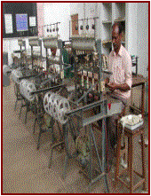
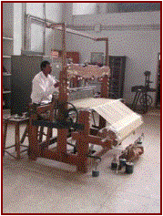
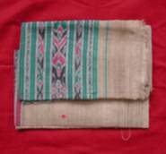
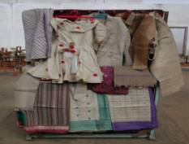

Raw Material Production
Raw material bank
With a view for providing alternative and
remunerative market as also to regulate the prices of cocoons, the Central
Silk Board, Govt. of India has set up a Raw Material Bank (RMB) for
tasar sector at Chaibasa in 1972. The RMB has a mandate to check the low
price offered by traders and exploitation of tribals. It operates through its
main office and is supported with two sub-depots one each at Raigarh
(Chhattisgarh) and Bhagalpur (Bihar).
Constraints
in price support: There is
no uniformity in the price structure for cocoons marketed in different
states. There are no regulations relating to pricing of cocoons. There are
wide differences in prices offered in different states. Hence, there is a
need to have uniformity in respect of pricing and market regulation related
to silk products among the state providing liverage for local condition and
elimination of middle men.
Impact
of working of RMB on tasar market: In spite of limited resources
at the disposal of RMB it was possible to eliminate the exploitation of the
tasar rearers by the middlemen to a large extent as the bank has been
purchasing the cocoons in the weekly haats.
The presence of Raw Material Bank in the weekly haats has instilled
confidence in the rearers for getting reasonable price in case there are no
buyers in the market.
An
overview: With regard to traditional and prevailing
marketing system of tropical tasar cocoons, it may be said that the
individual handloom and powerloom units also buy cocoons from open market to
some extent, but largely depend on traders. In fact, the smaller weavers are
virtually controlled by mahajans/traders. By and large, the market share for
tasar cocoons in Jharkhand, Bihar, Chhattisgarh and Madhya Pradesh which accounts
for over 80% is as follows:
|
Market players
|
Chhattisgarh/
M.P. (%)
|
Jharkhand/Bihar
(%)
|
|
Traders
Govt Agencies
KVIB/KVIC/TRIFED
Reelers/Weavers
Raw Material Bank
|
20
70
5
3-4
1-2
|
75
3-4
10
10
1-2
|
It
is evident that the marketing sector for disposal of tasar cocoons is not
well organized and different methods are being adopted by tasar growing
states. Despite various arrangements, the existing system of marketing is not
adequate. The role of RMB is very limited and account for only 1-2% of the
cocoon transaction. So, exploitations both of rearers and reelers by the
mahajans/middlemen is still in practice.
In view of the above, there is an urgent need for organised tasar
cocoon marketing in tasar growing states of the country.
Reeling
Natural
fibre of tasar silk is a continuous silk filament spun by silkworm, A. mylitta.
Simultaneous unwinding of filaments from cocoons, imparting twist and winding
is reeling. In tasar generally 5-7 filaments from cocoons are combined
inserting a twist. Raw materials produced after reeling are listed below:

1.
Untwisted
reeled raw silk
2.
Twisted
reeled raw silk
a)
Low
twist reeled silk
b)
Medium
twist reeled silk
c)
High
twist reeled silk
3.
Single
twisted silk
4.
Double
twisted silk
5.
Two
ply twisted silk
6.
Three
ply twisted silk
7.
Four
ply twisted silk
8.
Tram
silk
9.
Organzine
silk
10.
‘S’,
‘Z’ or ‘S’ & ‘Z’ twisted silk
11.
Finer
denier reeled silk–23D, 30D, 40D, 50D
Weaving
Silk
fabric is the end product of weaving. Weaving involves winding, warping,
draftings, sizing on to the loom. Following are the end products in tasar
silk:

1. Plain woven silk
2. Twill woven silk
3. Diamond woven silk
Range of End Products:
Tasar silk fabrics are mainly used as gents wear in India. The other foms are thicker varieties
of fabrics like dress material, upholstery and furnishing fabrics made from
tasar ghicha, tasar ghicha noil and tasar katia yarn catering to the export
markets.
A list of product range is given below:
I. Shirting: Warp x Weft
1.
Tasar
reeled x Tasar reeled
2.
Tasar
reeled x Mulberry reeled
3.
Tasar
reeled x Katia
4.
Tasar
reeled x Balkal
5.
Tasar
reeled x Cotton
II. Malmal: Tasar reeled x
Tasar reeled (Sarees)
III. Safa
and Turban cloth: Tasar reeled x
Tasar reeled
IV. Sanialas
(Coffin cloth): Tasar reeled x
Tasar reeled (Light weight
with
red border mainly exported to Arab
countries)
V. Sarees:
1.
Tasar
reeled x Tasar reeled (With plain border)
2.
Tasar
reeled x Tasar reeled (with tie and dye design)
3.
Tasar
reeled x Tasar reeled (with stripes and checks)
4.
Tasar
reeled x Tasar reeled (with prints)
5.
Tasar
reeled x Tasar reeled (Jacquard design)
VI. Chaddar:
1.
Tasar
reeled x
Tasar reeled (with plain, twill and diamond weaves)
2.
Katia x Katia (Plain and twill)
3.
Tasar
reeled x Katia
4.
Jhuri x Jhuri (Heavy weight)
VII. Export
varieties (Suiting, upholstery and Furnishings)
Warp x Weft
1.
Reeled
tasar x
Noil or spun silk
2.
Reeled
tasar x
Ghicha
3.
Reeled
tasar x
Ghicha + Noil
4.
Cotton x
Ghicha + Noil
5.
Jhuri x Jhuri
6.
Spun
silk x Ghicha + Noil
7.
Cotton x
Jhuri
|

|
|

|
|
|
Back
|